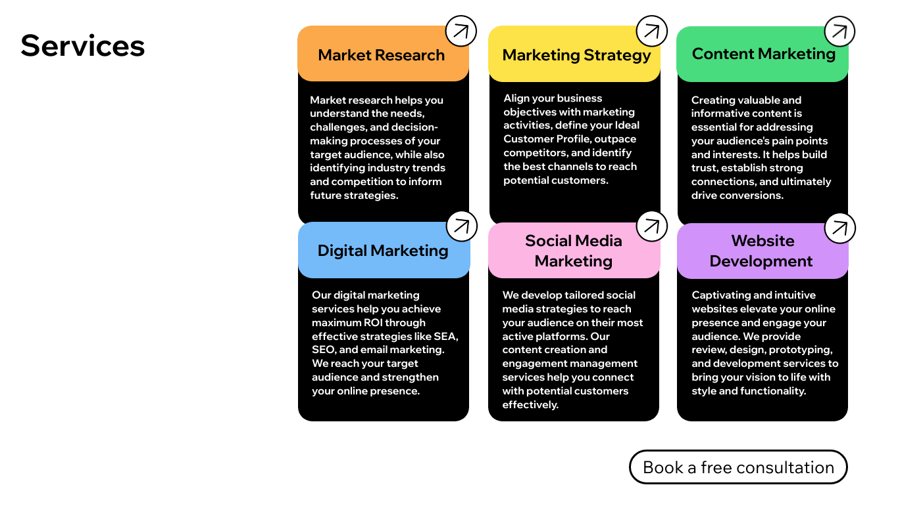
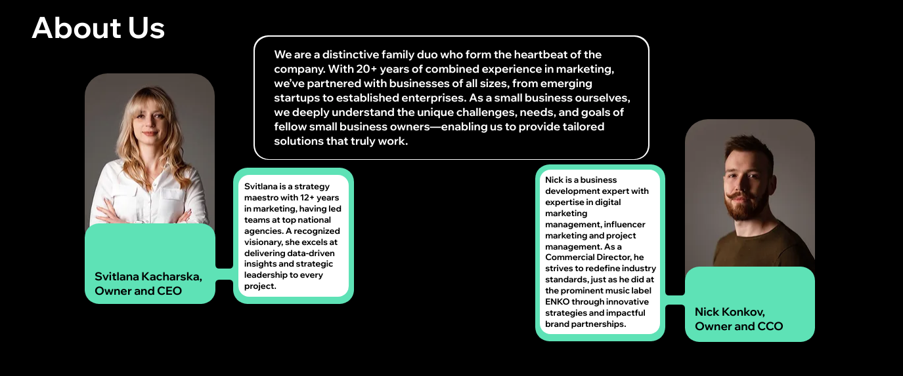
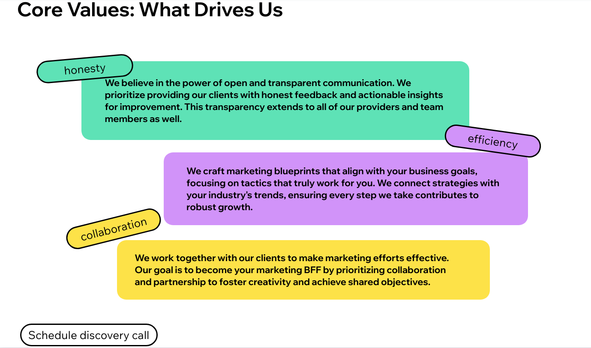
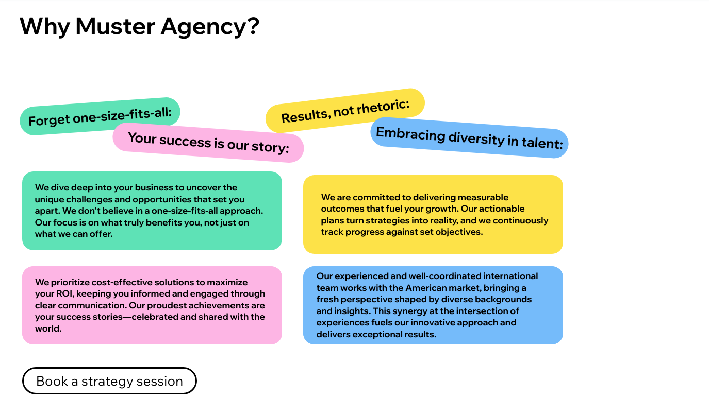
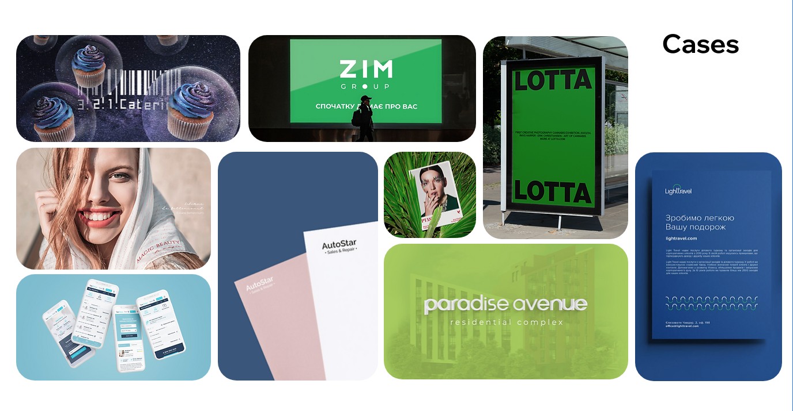
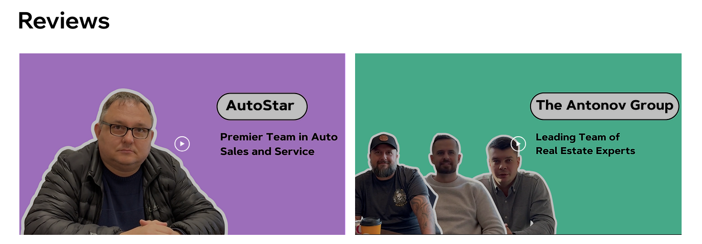

Muster Agency
Information architecture, UX writing, website content
Muster Agency is an American marketing agency that serves as a Fractional CMO
for small and medium-sized businesses in the U.S. market, offering services through a monthly subscription model.
[ My role ]
While working on the agency’s website, I completed the full UX copywriting cycle,
including developing the information architecture, creating content for all pages,
and crafting various effective CTAs (Call-to-Action) focused on achieving business goals.
[ Main page ]
On the homepage, I delivered a clear and direct message in the headline that communicates the
service's unique value proposition (UVP), and briefly outlined the cooperation format in the subheadline.
To immediately engage the user, I added a clickable gallery with case previews and a CTA button to encourage
further interaction and subscriptions. In the header, I placed navigation elements with the main sections of the site
in chronological order to ensure users can easily find the information they need.

[ Second screen ]
Here, I placed a section describing the services, immediately showcasing the specific
pain points the agency addresses for businesses. In the service descriptions,
I emphasized the results for clients rather than internal processes. I concluded
the block with a strong CTA to convert users into leads and potential clients.

[ Building the trust ]
In the following sections, I focused on building trust in the company. In the “About Us” section,
I created an emotional connection with the audience by sharing the company’s family story and individual
profiles of the founders, highlighting their professional experience and key achievements.

[ Values section ]
At this stage, the user partly loses attention, so the section with the company’s
values is structured with short paragraphs arranged in a visual hierarchy to make the content easy to scan.

This section I dedicated to RTB (reason to believe) — key arguments favoring working with the agency.

[ Final screens ]
Finally, I included cases and client reviews, showcasing the agency's expertise through real projects.

